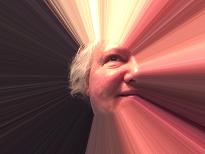

|  | Truus. Vrouw. Geboren: 23-07-1958. Huisgenoot: een gewezen kater. Ja ik ben zijn butler. Bas is zijn naam. Deze website bestaat uit drie pagina's. De pagina die u nu leest (HOME). een pagina met opsomming van door mij gevolgde opleidingen en opgedane werkervaring (CURRICULUM VITAE). Een pagina met contactgegevens en een mogelijkheid om mij een bericht te sturen (CONTACT). Deze opleiding webdesign van NHA volg ik met plezier (al heb ik even een flinke dip op moment van intikken). Het is leuk om hiermee bezig te zijn. Jammer dat het bij deze cursus zal blijven. |